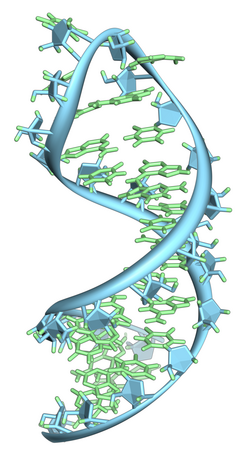
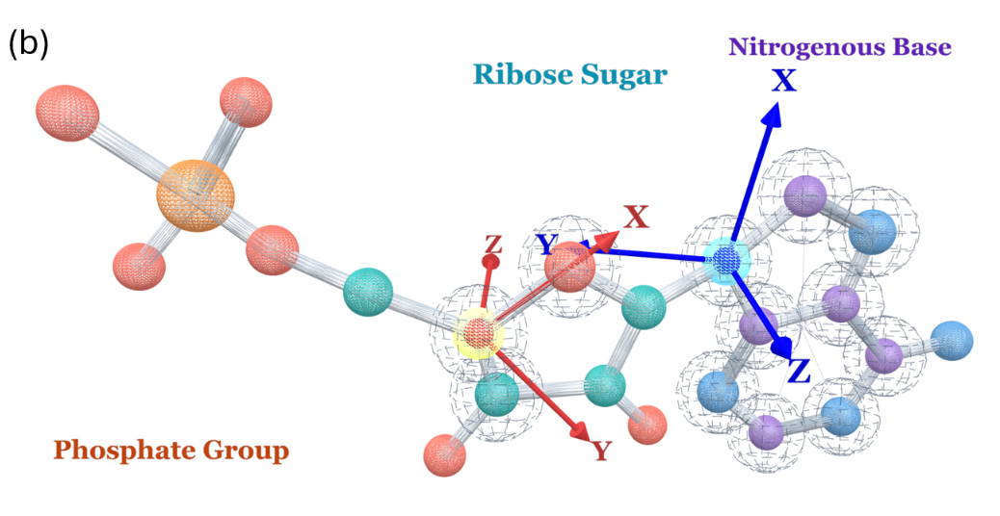
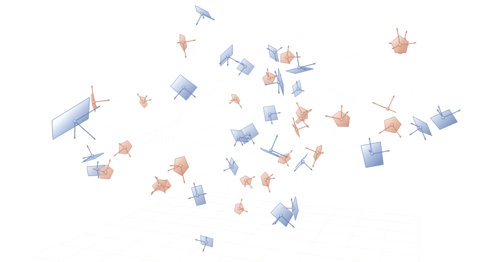
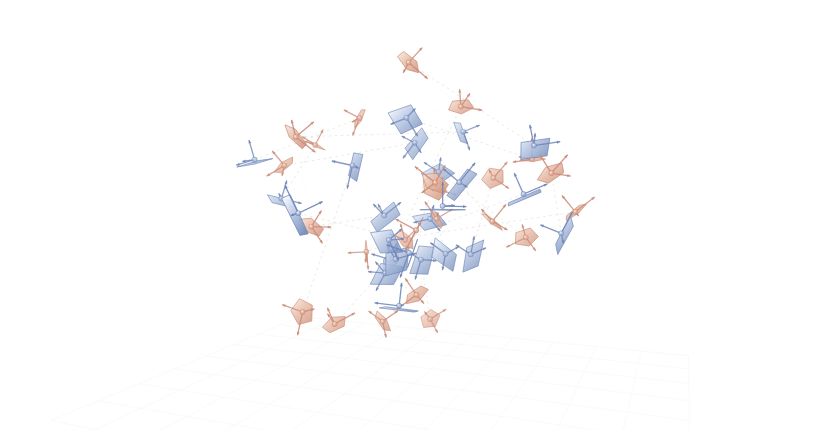
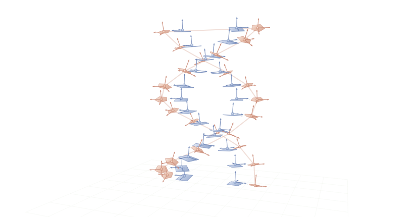
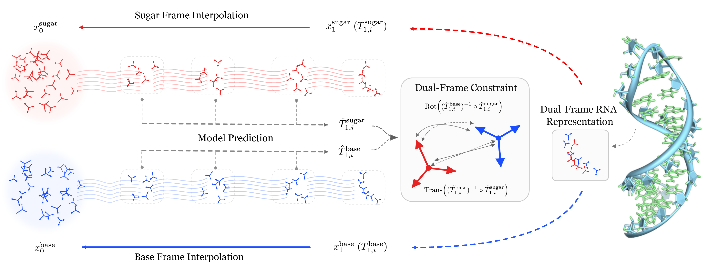

RNA序列-结构联合设计DuetRNA：
DuetRNA：
我们为什么用两个坐标系
表示RNA？
用双框架，组织 RNA 的两类几何。
联合生成序列与三维结构。

BASE FRAMESUGAR FRAME用双框架，组织 RNA 的两类几何。
联合生成序列与三维结构。

BASE FRAMESUGAR FRAME我们比较了不同的核苷酸参考系：
碱基与核糖，对应两类互补的几何任务。

配对 · 堆叠 · 相对朝向
描述核苷酸之间的关系
局部构象 · 骨架重建
保留原子补全所需几何
碱基坐标系更稳定地描述配对关系，
核糖坐标系更好地保留骨架几何。
典型 cWW 配对的旋转漂移 · 越低越好
碱基原子重建 RMSD · 越低越好
同时保留核糖框架的骨架重建精度。
让结构表示，对应 RNA 的几何分工。
两个坐标系分别学习位置与朝向，
通过共享特征和相对位姿监督保持耦合。

t = 0
t = 0.5
t = 1
较 RNA-FrameFlow 提高 7.67 个百分点
RiboGen → DuetRNA，数值提高 4.33 个百分点。
IF scTM validity
分开建模两类几何，
同时学习它们之间的约束。
结合 RNA 的化学特性、表示分析与消融实验，
我们找到了更适合 RNA 生成的碱基—核糖双坐标系表示。
预测折叠吻合只是起点，仍需实验检验生化功能。
DuetRNA 目前也仅完成计算评估。
领域仍面临原子冲突与链连接异常；DuetRNA 的
糖苷键精度及随长度增加的断链问题仍待改善。
RNA 三维结构数据有限，生成结果易受训练分布影响。
我们仅验证了 40–150 nt，对更长 RNA 与新折叠仍缺乏证据。
延续组里对三维几何与参考系的研究，
我们关注 RNA 特有的结构表示。
GraphMVP · GeoSSL · Geom3D
分子几何、对称性与表示学习。AssembleFlow · NeuralMD · ProteinDT
分子组装、蛋白–配体动力学与蛋白质设计。RigidSSL · InertialAR · InertialGenome
蛋白构象、小分子与染色体空间结构。Base + Sugar
分别建模碱基关系与核糖–磷酸骨架。